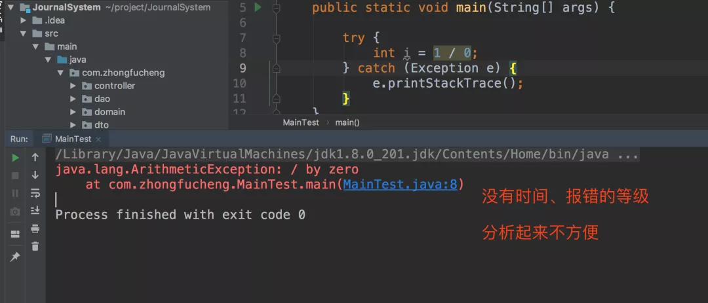
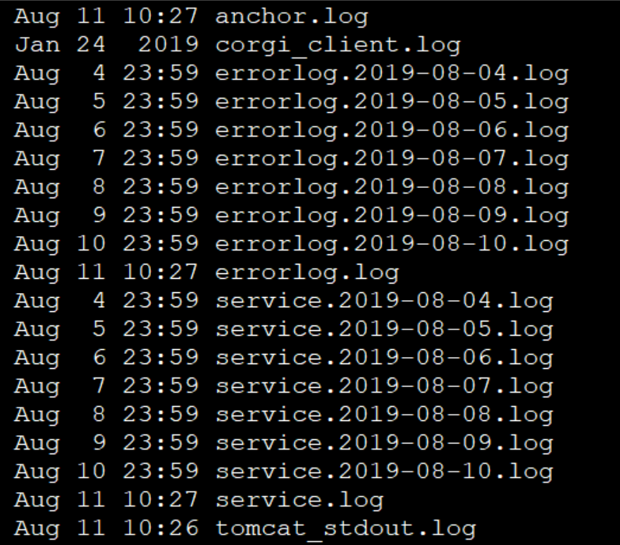
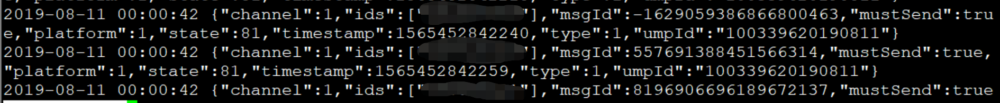
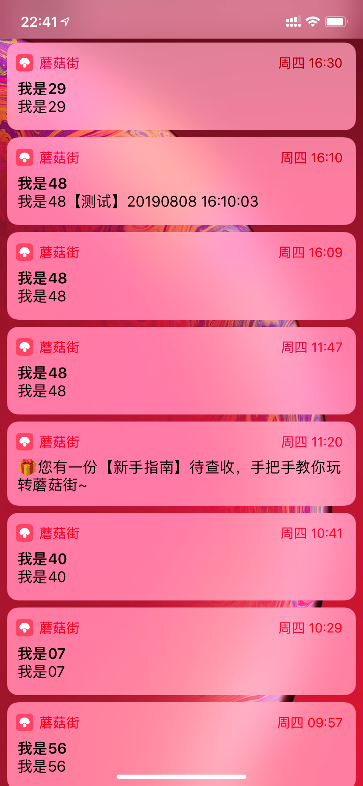
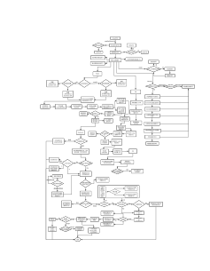

原文连接:https://www.cnblogs.com/Java3y/p/11422031.html
前言
只有光头才能变强。
文本已收录至我的GitHub仓库，欢迎Star：https://github.com/ZhongFuCheng3y/3y
记得之前写过一篇：《阿里巴巴 Java开发手册》读后感，之前自学时由于没怎么接触过打“日志”，所以《手册》中的“日志规约”我就先放一边去了。
而之前写了一篇：在公司做的项目和自己在学校做的有什么区别？中就有提到：公司的项目不会有e.printStackTrace();这种代码的存在。因为这打印出来的错误信息没有日期、等级等等，分析起来不方便。
在工作中去服务器上查日志又是一个非常非常常见的操作，所以当初我又写了一篇 工作中常用到的Linux命令，里边就谈到了查日志时常用的Linux命令。
想着，既然接触日志也有一段时间了，不妨在回看《手册》，看看有什么要注意的地方，于是就有了这篇笔记。
一、Java打日志的基础
以前自己自学的时候，排查问题只会写下面的代码：
try {
// doSomething
} catch (Exception e) {
e.printStackTrace();
}
----------
// 查看某个数据的值时：
System.out.println(xxxx);去到公司就发现上面的代码全不见了，剩下的是：
LOGGER.info("begin to run Java3y:{}", id);
----
LOGGER.error("excepiton occurs when run Java3y {}, exception{}", id, e.toString());如果使用e.printStackTrace();的话，打印在控制的信息分析不方便：

而我们将信息分等级和时间记录在服务器的磁盘上，有问题了就可以根据对应的信息去查找相关的日志(这样排查起来是十分方便的)：

我们再来看一下一般的日志长什么样的：

例如：现在有人来反馈某某某用户好像收不到短信，给出发送时间和用户ID，我们就可以在日志上找出该用户在我们系统的发送状态（例如图上的：state:81，我们就认为是发送成功状态)
那么，问题来了，我们在哪打日志？《手册》上其实已经给出了答案：
谨慎地记录日志。生产环境禁止输出 debug 日志；有选择地输出 info 日志；如果使
用 warn 来记录刚上线时的业务行为信息，一定要注意日志输出量的问题，避免把服务器磁盘
撑爆，并记得及时删除这些观察日志。
大量地输出无效日志，不利于系统性能提升，也不利于快速定位错误点。记录日志时请思考：这些
日志真的有人看吗？看到这条日志你能做什么？能不能给问题排查带来好处？
1.1什么叫做 打点 ？
打日志最常见的就是用来打印出程序执行时的相关信息，用于快速定位问题和排查问题。我一开始也是这么理解的，但是其实还可以延伸一下。
我现在搞的那个系统，我们还使用日志在系统的执行链路上打点。比如说，我现在要推送一条通知消息，通知消息其实就是下面这种：

这个过程大概是如此的：
- 首先别人调用我的RPC提供的接口（或者我自己调用自己的接口），发现这是一个通知消息。于是我组装成对应的Task，异步放到消息队列中
- 另一个系统从消息队列中取出Task，对这个Task进行业务的处理（比如说是否夜间屏蔽，是否强制发送等等），然后调用HTTP接口把这个Task交给下游
- 下游做的事其实也很多，整块链路很长（比如要调用SDK的库，Android和IOS又做不同的处理）

而我们又希望在推送完了之后能统计出一些指标（曝光量，点击率，转化率）等等。于是乎，就需要在一些关键的位置上打一个日志（专业点叫做打点）
在整块链路都打通了以后，将这些点位（日志）收集起来，放到实时流式处理平台(storm/flink)上清洗/过滤。如果是实时需要用到的放到Redis，离线的放在Hive。
二、手册规范
2.1 使用门面模式的日志框架
【强制】应用中不可直接使用日志系统（Log4j、Logback）中的 API，而应依赖使用日志框架
SLF4J 中的 API，使用门面模式的日志框架，有利于维护和各个类的日志处理方式统一。
门面模式我之前也写过一篇笔记：三分钟学会门面模式！
其实说白了就是希望抽象出一层API，能够在切换具体日志框架的时候不需要大面积更改。
这个我们可以按学JDBC的时候去理解：
无论我是接入MySQL、Oracle还是SQL Server，但我的接口永远都是那一套，切换数据库时不需要更改我的Java API
看了一下公司的项目，采用的是SLF4J+Logback
2.2 调用RPC接口使用Throwable类拦截
【强制】在调用 RPC、二方包、或动态生成类的相关方法时，捕捉异常必须使用 Throwable
类来进行拦截。
之前在排查问题的时候，有个问题死活排不出来，DeBug的时候一直没进catch模块。后来我学长就说：“要不你改成Throwable试试？
try {
} catch (Throwable e) {
}我就很疑问，说：“为啥要改成Throwable呢？我们用Exception不就可以捕获所有的异常了么，Exception是Throwable的一个子类，但Exception已经是包含所有的Java异常了呀”
众所周知，Throwable有两个子类：
- Error（一般我们都会把这个忽略掉...一般情况下出现了Error程序都运行不起来)
- Exception
The Throwable class is the superclass of all errors and exceptions in the Java language
在《手册》上也有对上面的规则进行说明：
说明：通过反射机制来调用方法，如果找不到方法，抛出 NoSuchMethodException。什么情况会抛出
NoSuchMethodError 呢？二方包在类冲突时，仲裁机制可能导致引入非预期的版本使类的方法签名不匹
配，或者在字节码修改框架（比如：ASM）动态创建或修改类时，修改了相应的方法签名。这些情况，即
使代码编译期是正确的，但在代码运行期时，会抛出 NoSuchMethodError。
大概的意思就是说：调用 RPC、二方包、或动态生成类的相关方法时，可能直接抛出的是Error，而catch Exception是无法捕获得到的。
想看例子的同学可以看看这篇文章：
最后
参考资料（阿里巴巴开发手册下载地址）：
查阅资料时发现的好文：
乐于输出干货的Java技术公众号：Java3y。公众号内有200多篇原创技术文章、海量视频资源、精美脑图，关注即可获取！

觉得我的文章写得不错，点赞！